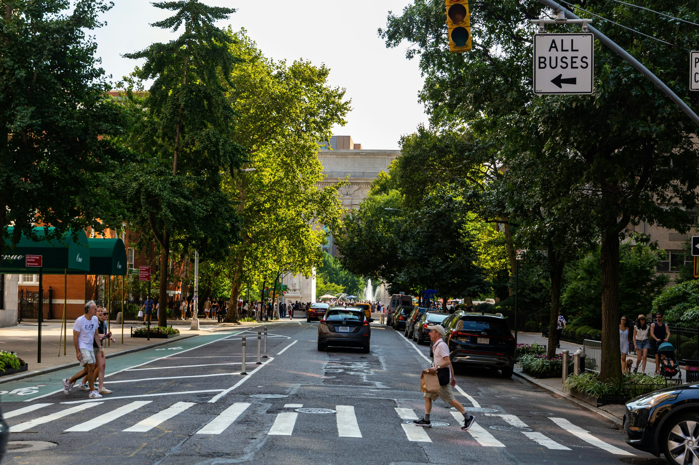
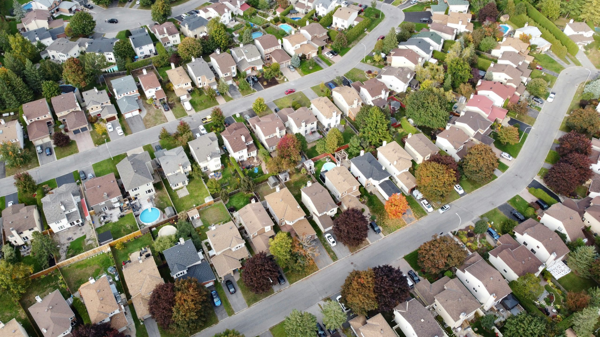
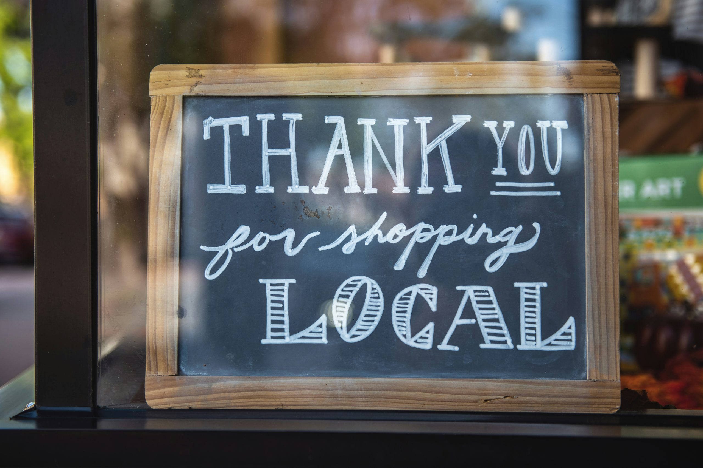

Supporting safer road design, better walkability, well-maintained public spaces, and neighbourhoods where residents feel safe. Every parent should feel comfortable walking their child to school. Every senior should feel confident crossing the street. Every resident should be able to get around their neighbourhood safely.

Everyone deserves to feel safe walking through their neighbourhood — and safe coming home. Feeling secure in your community is fundamental to quality of life. Residents should feel comfortable taking an evening walk, letting their children play outside, using local parks, and going about their daily lives without constantly worrying about their personal safety or the security of their homes.

Your tax dollars should work as hard as you do. People pay taxes and expect results. Residents work hard for their money. In return, they deserve a municipality that treats every tax dollar with care. That means being responsible with spending, focusing on outcomes, making sure resources actually improve services people use every day.
Great neighbourhoods need great local businesses. Cafés, bakeries, restaurants, shops, professional services, and independent businesses do more than provide products and jobs. They create places where people meet, spend time, and build connections.

A city should give people reasons to leave the house, meet one another, and enjoy where they live. Arts and culture are an important part of creating that kind of city. Music, festivals, performances, public art, cultural events, and community programming bring people together and create experiences that cannot be measured simply in infrastructure or economic statistics.
You should not have to fight City Hall to get an answer. When residents take the time to contact their municipality, they deserve to know that someone is listening. Whether it is a concern about a road, a neighbourhood issue, a property matter, or a municipal service, people deserve clear communication and reasonable follow-up.